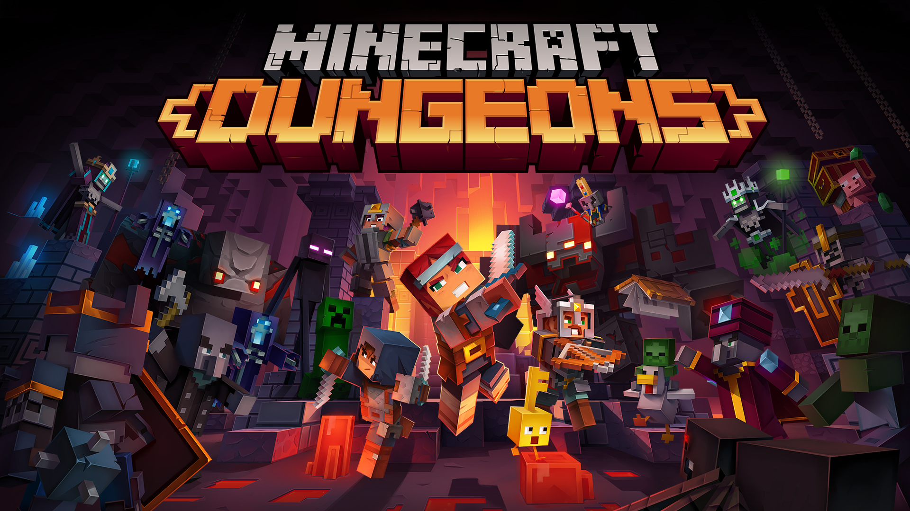

介绍
Minecraft是一款沙盒类电子游戏，中国版官方译为《我的世界》，又称《当个创世神》，开创者为马库斯·泊松（Notch）。游戏现由Mojang Studios维护，隶属于微软Xbox游戏工作室。
Java版（Java Edition）是Minecraft的最初版本
基岩版（Bedrock Edition）是由Mojang Studios、Xbox Game Studios和SkyBox Labs开发的多平台版本Minecraft
教育版（Minecraft Education）是Minecraft特别为教室使用而设计的教学版本。它由Mojang Studios和Xbox Game
Studios共同开发，包含了让Minecraft在课堂里容易使用的特性。
中国版（China Edition），是Java版和基岩版的中国本地化版本，由Mojang Studios、Xbox Game Studios和网易联合开发。

Minecraft Dungeons，又名我的世界：地下城，是一款动作/冒险角色扮演类电子游戏，由Mojang Studios、Xbox Game Studios和Double Eleven共同开发。

Minecraft Legends，又名我的世界：传奇，是一款由Mojang Studios、Xbox Game Studios和Blackbird
Interactive开发的即时动作战略游戏，发布于2023年4月18日。

Minecraft: Story Mode（我的世界：故事模式）是一个以沙盒电子游戏Minecraft为基础的，具有可点选性、叙事性、章节性的电子游戏。由Minecraft的开发者Mojang
Studios与Telltale Games合作开发。
Minecraft: Story Mode - Season Two（我的世界：故事模式 -
第二季）是一个以沙盒电子游戏Minecraft为基础的电子游戏，具有可点选性、叙事性与章节性，由Minecraft的开发者Mojang Studios与Telltale Games合作开发。